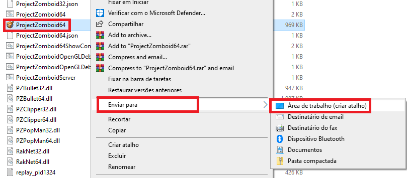
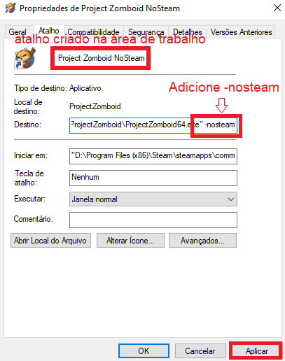
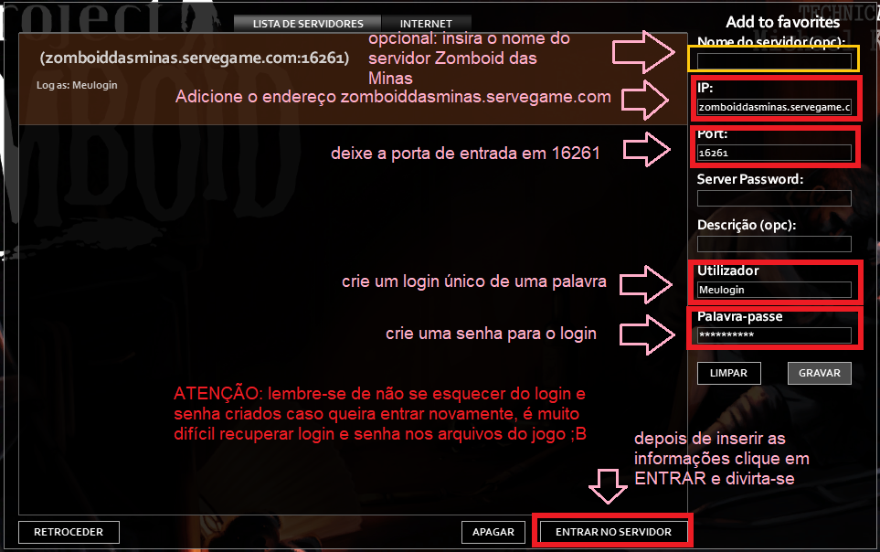

PREPARANDO O JOGO
1º Você precisará ter o jogo instalado via Steam (clique aqui para ver a página de compra) ou de alguma outra forma.
*Incentivamos a comprar o jogo para ajudar a empresa que criou, que é Indiestone, uma empresa de jogos indies. Mas caso não seja possível adquirir o jogo neste momento, mas queira muito experimentar a gameplay, entre em contato com um dos mods das lives para saber sobre a possibilidade de instalação de outras formas. 😉☠️
2º Depois de instalado, localize a pasta de instalação central do jogo. Se sua instalação foi feita pela Steam:
Atenção: se for sua primeira instalação, experimente abrir o jogo pelo menos uma vez para que os arquivos necessários para jogar online sejam criados no seu sistema. Depois é só fechar o jogo novamente e voltar pro tutorial.
3º Na pasta de instalação, vá até o ícone de abertura do jogo (ProjectZomboid32 ou ProjectZomboid64 dependendo do seu computador, geralmente o 64) e crie um atalho para algum local onde você tem acesso rápido a seus jogos, como por exemplo, área de trabalho.
4º Vá até o atalho criado, clique com o botão direito e clique em PROPRIEDADES, na aba DESTINO dê um espaço e escreva -nosteam. Depois clique em APLICAR para salvar a alteração.
ATENÇÃO: sempre que for jogar no servidor das minas, você terá que abrir o jogo por este atalho.
INSTALANDO MODS
5º CLIQUE AQUI para baixar os MODS necessários para entrar no servidor. Caso ainda não tenha, você precisará de um programa de extração de arquivos, como WINRAR, 7ZIP, WINZIP facilmente encontrados no Google.
6º Agora, localize a pasta de configurações do jogo que é criada quando você abre ele pela primeira vez, geralmente em: C:/USUÁRIOS/Zomboid, dentro dessa pasta está a subpasta mods, EXTRAIA OS ARQUIVOS dos mods baixados DENTRO DESSA PASTA > C:/USUÁRIOS/Zomboid/mods.
Atenção: NÃO É A PASTA DE INSTALAÇÃO DO JOGO, mas sim a pasta de configuração. Caso tenha instalado o jogo mas nunca abriu ele, é necessário abrir pelo menos uma vez para que essa pasta Zomboid seja criada em C:/USUÁRIOS/Zomboid. Após abrir, feche o jogo e retorne ao tutorial.
LOGANDO NO SERVIDOR
7º Agora que você já instalou o jogo e colocou os mods necessários na pasta indicada, abra o jogo pelo atalho criado com -nosteam.
8º No menu principal clique em JOIN ou CONECTAR.
9º Insira as seguintes informações nas janela indicadas de login:
Atenção: lembre-se de salvar seu login e senha caso queira entrar em gameplays futuras 😉
10º Depois disso, clique em entrar no servidor, aguarde a conexão e divirta-se no apocalipse das minas. 🧟♀️
Caso tenha problemas para entrar no servidor, procure os moderadores em uma das lives.